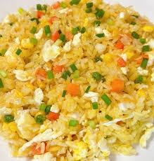
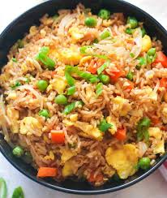
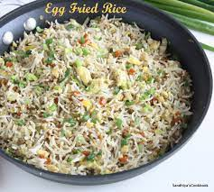
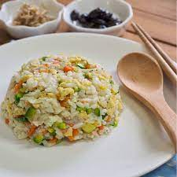
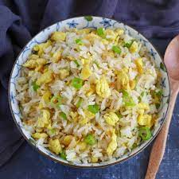

| ingredients | Measurement |
|---|---|
| Rice | 1 1/2 cups of Rice |
| Eggs | 4 Big Egss |
| Vegetable or Nentral Oil | 3 tablespoons (45ml) |
| Soy Sauce | 2 teaspoons (10ml) |
| scallions | 3 thiny sliced crosswise |
| Salt | 1/2 teaspoon |
| Seasonal | For Taste |
Let's talk about egg fried rice.
This egg fried rice recipe is designed to work with any cooking setup, whether you're lucky enough to have a true flaming-hot wok burner or are just using a nonstick skillet on an electric cooktop.
Egg fried rice in its absolute
purest form—nothing but eggs, rice, cooking oil, soy sauce, and
scallions—is one of the simplest stir-fries around.
But like all
simple foods—pizza, grilled cheese, a roasted chicken—it's the
details of the process that elevate its basic ingredients into
something transcendental.
In the case of egg fried rice, that means
light, individual grains of rice with just the right balance of
chewiness and tenderness, fluffy and fragrant eggs, and the subtle
savory aromas of cooked soy sauce and scallions.
If we can get a
little smoky wok hei into the mix, all the better.

Preparation Time : 10min
Cook : 10min
Serves : 2 to 3 severings
Directions for your perfect Egg Fried Rice
- Before you begin. This dish cooks fast, so make sure you have everything ready before you start. Have your rice on a plate, with any large clumps broken up by hand. Have a bottle of oil and soy sauce ready to go, your scallions sliced, your eggs beaten, a towel for grabbing the wok handle, and a plate to transfer the cooked fried rice when it's done.
- Step 1: Preheat the wok. Properly preheating the wok performs two functions. First, oil added to a preheated wok forms a slick, non-stick surface, a process known as longyau in Cantonese. Second, a hot wok will cause part of the beaten egg to puff up into fluffy curds and gently brown, while still maintaining plenty of moister bits for tenderness.
- Step 2: Add oil, remove from heat, and add the beaten egg. Add a good splash of a neutral cooking oil, such as canola, rice bran, or peanut, swirl, turn heat to low, then add the beaten egg. It should begin to puff and sputter immediately. With a high output wok burner, if you leave the burner running at its highest heat when the egg goes in, it scorches in literally seconds. Instead, you let the heat of the wok do the cooking, swirling the wok as the egg cooks, then flipping it into a sort of semi-omelet just as the first side lightly browns. This takes about 15 seconds. If you want to get extra fancy, you can separately cook the egg whites and egg yolks to bring more flavor and textural contrast to the finished dish. (I rarely feel this fancy.)
- Step 3: Add more oil and the rice. Push the egg omelet up the side of the wok, add a splash more oil, then dump the rice into the oil in the center of the wok. Do not turn the heat back up yet or your eggs will burn!
- Step 4: Flip the egg and start stir-frying. Using a deft flick of the wrist (or just a spatula), flip the egg omelet on top of the rice. Now, with the egg safely on top of the rice, it's safe to turn the heat back up to high and start stir-frying. Putting the egg on top of the rice also makes it easier to break it up into pieces as chunky or as fine as you like, while simultaneously breaking up any rice clumps. As the egg breaks up and the rice fries, start tossing and stirring. You'll know your rice is ready when individual grains start to jump and leap in the pan by themselves when you stop stirring. If you can pull it off, make sure some rice and egg passes up over the back lip of the wok as it stir-fries. This allows tiny droplets of oil to combust and create sooty deposits that add smoky wok hei flavor to the finished dish. Subtlety is key here. Lightly smoky, not burnt, is the goal.
- Step 5: Season the rice. When the rice and egg are ready, nestle it down into the bottom of the wok, then drizzle a little oil around one edge of the wok. Immediately drizzle a couple teaspoons of soy sauce where you just drizzled the oil. The second part of wok hei flavor comes from the rapid reduction and browning of the soy sauce, which you only get by adding it around the edge of the wok (if you drizzle it directly onto the rice, it gets absorbed before it can reduce properly). Why the drizzle of oil? Without it, your reduced soy sauce will firmly adhere to the side of the wok and burn, rather than sticking to the rice and eggs as you toss them.
- Step 6: Add the scallions. After adding the soy sauce, stir fry for a few seconds, add the scallions, then shut off the heat. Continue stir-frying in the residual heat of the wok until the scallions are aromatic and lightly tenderized, about ten seconds longer, then immediately transfer the contents to a serving dish.
For More

Chinese Egg Fried Rice

Golden Egg Fried Rice

Imaculate Egg Fried Rice

Sandhiya Egg Fried Rice

Dished Egg Fried Rice

Traditional Egg Fried Rice